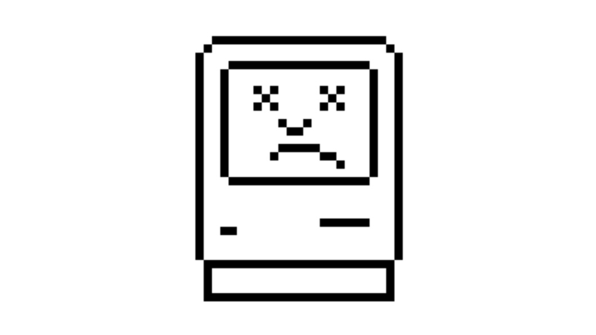

Vanadiry
神奇的首页
最新消息
有趣的地方
隐私声明
Twitter
Bilibili
GitHub
2021 03 24
为多彩的生活
再添一点彩
这里记录任何好玩、有趣的照片，有时候，这里还会出现一些奇妙的事。
Vanadiry的画廊
2021 02 19
虚拟的人
奇妙的人

Phainaru，一个出色的虚拟技术，通过它，你可以打造出属于自己的形象。让你的生活变得更加多姿多彩。
Phainaru
Tips：其实我们的tips有很多正经的，比如说这个。